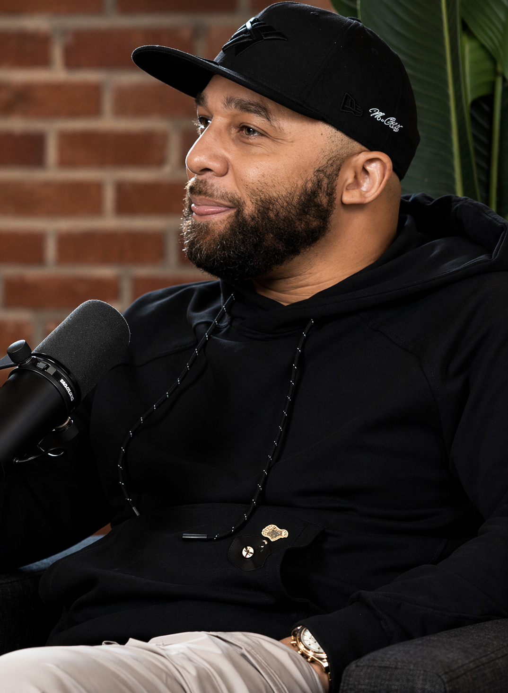

Story and Production
Decoded Story Lab
Documentary-centered storytelling for justice-impacted voices, creative collaborators, and culture-shifting projects.
Selected Work
A look at the platforms, collaborations, and stories that carry Louis's work into public life.

Documentary-centered storytelling for justice-impacted voices, creative collaborators, and culture-shifting projects.
Authentic reentry and justice insight for scripted storytelling on Hulu.
A children's book helping families explain incarceration and hope in a truthful way.
Visit the books pageDeadline announcement for the January 2026 U.S. theatrical release of Holding Liat.
Open coverage pagePrime Video, Hulu, policy spaces, executive rooms, and public conversations where culture and accountability intersect.
Louis helps stories stay honest, especially when they involve incarceration, reentry, justice, and the communities most affected by them.